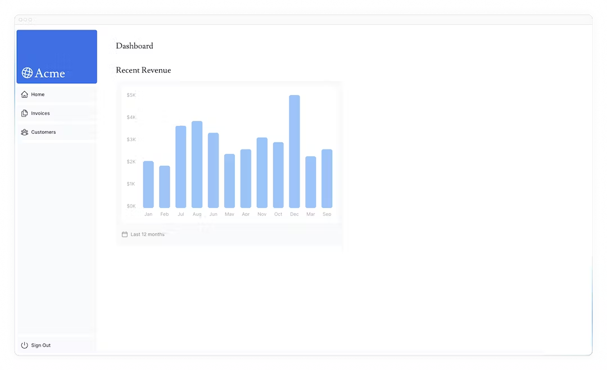
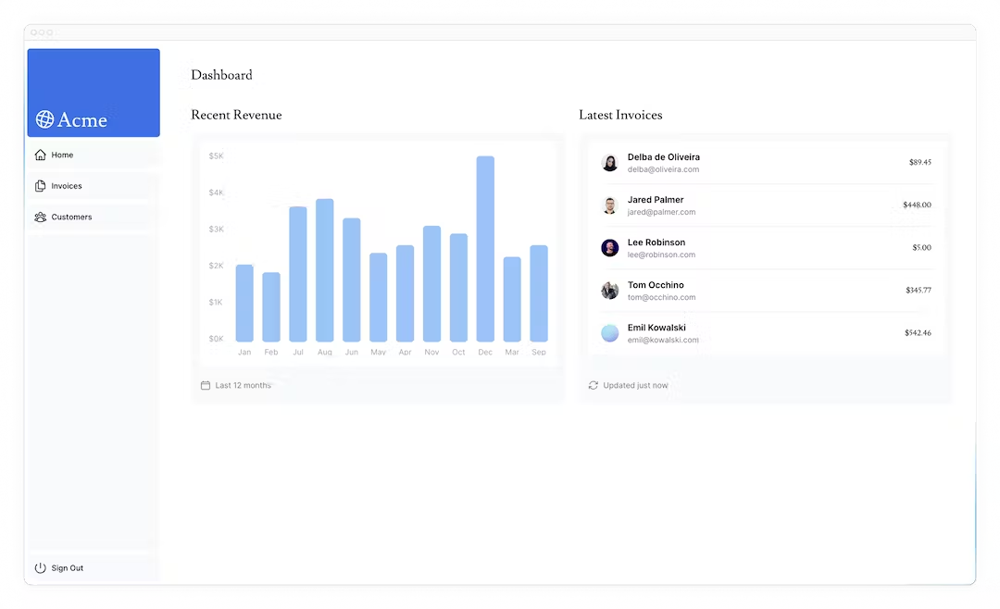
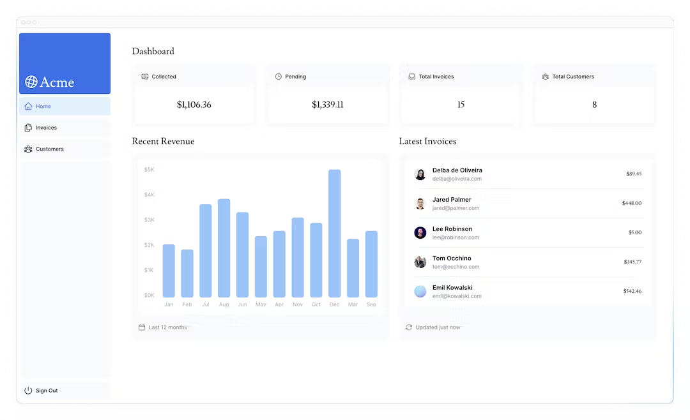
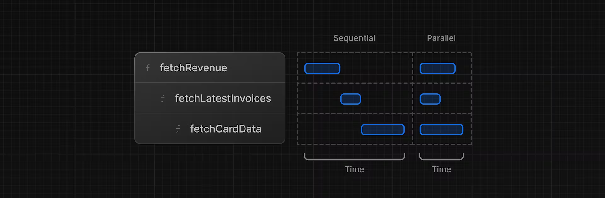

7データのフェッチ
データベースの作成とシードが完了したので、アプリケーションのデータを取得するさまざまな方法について説明し、ダッシュボードの概要ページを作成しましょう。
この章では...
この章で取り上げるトピックは以下の通りです。
- データを取得するためのいくつかのアプローチについて学びます：API、ORM、SQLなど。
- Server Components を使用すると、バックエンドのリソースにより安全にアクセスできるようになります。
- ネットワーク・ウォーターフォールとは何か。
- JavaScriptパターンを使用して並列データフェッチを実装する方法。
データ取得方法の選択
APIレイヤー
APIは、アプリケーション・コードとデータベースの間の中間層です。APIを使うケースはいくつかあります：
- APIを提供しているサードパーティーのサービスを利用している場合。
- クライアントからデータを取得する場合、データベースの秘密がクライアントに公開されないように、サーバー上で動作するAPIレイヤーを用意したい。
Next.jsでは、ルートハンドラを使ってAPIエンドポイントを作成できます。
データベースクエリ
フルスタックのアプリケーションを作るときには、データベースとやりとりするロジックも書く必要があります。Postgresのようなリレーショナルデータベースでは、SQLやPrismaのようなORMでこれを行うことができます。
データベースのクエリを書かなければならないケースもいくつかあります：
- APIエンドポイントを作成するときに、データベースとやりとりするロジックを記述する必要があります。
- React Server Components（サーバー上でデータを取得する）を使用している場合は、APIレイヤーをスキップして、データベースの秘密をクライアントに公開するリスクを冒すことなく、データベースに直接問い合わせることができます。
ここでクイズです
これらのシナリオのうち、データベースに直接クエリすべきでないのはどれですか？
- クライアントでデータを取得する場合
- サーバーでデータを取得する場合
- 独自のAPIレイヤーを作成してデータベースとやりとりする場合
答え
"1. クライアントでデータを取得する場合"
その通り、クライアントでデータを取得する際、データベースに直接問い合わせるべきではありません。これは、データベースのシークレットをクライアントに公開することになるため、セキュリティ上のリスクがあります。
それでは、React Server Componentsについて詳しく説明しよう。
データ取得にServer Componentsを使用する
デフォルトでは、Next.jsアプリケーションはReact Server Componentsを使用します。Server Componentsでデータを取得するのは比較的新しいアプローチですが、Server Componentsを使用する利点がいくつかあります：
- Server Componentsはpromiseをサポートしており、データ取得のような非同期タスクのためのシンプルなソリューションを提供します。
useEffectやuseState、データ取得ライブラリに手を伸ばすことなく、async/await構文を使用できます。 - Server Componentsはサーバー上で実行されるため、高価なデータ取得やロジックをサーバー上に保持し、結果のみをクライアントに送信することができます。
- 前述のように、サーバーコンポーネントはサーバー上で実行されるため、APIレイヤーを追加することなく、データベースに直接問い合わせることができます。
ここでクイズです
React Server Componentsを使ってデータを取得する利点は何ですか？
- SQLインジェクションから自動的に保護されます。
- APIレイヤーを追加することなく、サーバーから直接データベースに問い合わせることができる。
- APIレイヤーを使用し、エンドポイントを作成する必要がある。
答え
"2. APIレイヤーを追加することなく、サーバーから直接データベースに問い合わせることができる。"
サーバーコンポーネントを使用すると、データベースから直接データを取得できます。
SQLの使用
ダッシュボードプロジェクトでは、Vercel Postgres SDKとSQLを使用してデータベースクエリを記述します。SQLを使用する理由はいくつかあります：
- SQLはリレーショナルデータベースをクエリするための業界標準です（例えば、ORMはフードの下でSQLを生成します）。
- SQLの基本を理解することで、リレーショナル・データベースの基本を理解することができ、その知識を他のツールに応用することができます。
- SQLは汎用性が高く、特定のデータを取得して操作することができます。
- Vercel Postgres SDKはSQLインジェクションからの保護を提供します。
SQLを使ったことがなくてもご心配なく。
app/lib/data.tsにアクセスしてください。ここでは@vercel/postgresからSQL関数をインポートしていることがわかります。この関数を使うと、データベースに問い合わせることができます：
どのサーバーコンポーネント内でもsqlを呼び出すことができます。しかし、より簡単にコンポーネントをナビゲートできるように、すべてのデータクエリをdata.tsファイルに保持し、コンポーネントにインポートできるようにしています。
ここでクイズです
SQLはデータのフェッチという点で何ができるのか？
- すべてのデータを無差別に取得
- 特定のデータを取得して操作する
- データを自動的にキャッシュしてパフォーマンスを向上
- データベーススキーマをその場で変更
答え
"2. 特定のデータを取得して操作する"
SQLを使用すると、特定のデータを取得し、操作するためのターゲットクエリを記述することができます。
ダッシュボードの概要ページ用にデータをフェッチする
データをフェッチするさまざまな方法を理解したところで、ダッシュボードの概要ページのデータをフェッチしてみましょう。/app/dashboard/page.tsxに移動し、以下のコードを貼り付けて、しばらく時間をかけて探索してください：
上のコードでは、下記の要素があります。
- Pageは非同期コンポーネントです。これにより、awaitを使ってデータを取得することができます。
- また、データを受け取るコンポーネントが3つあります：
<Card>,<RevenueChart>,<LatestInvoices>です。これらは現在、アプリケーションのエラーを防ぐためにコメントアウトされています。
<RevenueChart/>のデータをフェッチする
<RevenueChart/>コンポーネントのデータを取得するには、data.tsからfetchRevenue関数をインポートし、コンポーネント内で呼び出します：
次に、<RevenueChart/>コンポーネントのコメントを解除し、コンポーネントファイル（/app/ui/dashboard/revenue-chart.tsx）に移動して、その中のコードのコメントを外してください。ローカルホストをチェックすると、収益データを使ったチャートが表示されているはずです。

さらにデータクエリーのインポートを続けましょう！
<LatestInvoices/>のデータ取得
<LatestInvoices /> コンポーネントでは、日付順に並べ替えられた最新5件の請求書を取得する必要があります。
JavaScriptを使ってすべての請求書を取得し、ソートすることもできます。しかし、アプリケーションの規模が大きくなるにつれて、リクエストごとに転送されるデータの量と、それをソートするために必要なJavaScriptの量が大幅に増える可能性があります。
インメモリで最新の請求書をソートする代わりに、SQLクエリを使って直近の5件の請求書だけを取得することができます。例えば、これはdata.tsファイルのSQLクエリです：
| app/lib/data.ts | |
|---|---|
ページで fetchLatestInvoices関数をインポートします：
次に、<LatestInvoices />コンポーネントのコメントを外します。また、/app/ui/dashboard/latest-invoices にある <LatestInvoices /> コンポーネント自体の関連コードもアンコメントする必要があります。
localhostにアクセスすると、最後の5件だけがデータベースから返されていることがわかるはずです。データベースを直接クエリすることの利点がわかっていただけたと思います！

実践: <Card>コンポーネントのデータ取得
次は<Card>コンポーネントのデータを取得するコードをご自身で考えてみてください。カードには次のようなデータが表示されます：
- 回収した請求書の総額。
- 保留中の請求書の合計金額。
- 請求書の総数。
- 顧客の総数。
ここでも、すべての請求書と顧客を取得し、JavaScriptでデータを操作したくなるかもしれません。例えば、Array.lengthを使って請求書と顧客の総数を取得することができます：
しかしSQLを使えば、必要なデータだけを取り出すことができます。Array.lengthを使うより少し長くなりますが、リクエスト中に転送するデータが少なくて済みます。これがSQLの代替案です：
| app/lib/data.ts | |
|---|---|
ヒント
- カードのコンポーネントをチェックし、必要なデータを確認する。
data.tsファイルをチェックして、関数が何を返すかを確認する。
準備ができたら、下のトグルを展開して最終的なコードを入力してください：
答え
素晴らしい！これでダッシュボードの概要ページに必要なすべてのデータが取得できました。ページはこのようになるはずです：

しかし...注意しなければならないことが2つあります：
- データリクエストが意図せず互いにブロックされ、リクエストウォーターフォールが発生しています。
- デフォルトでは、Next.jsはパフォーマンスを向上させるためにルートをプリレンダリングします。そのため、データが変更されてもダッシュボードには反映されません。
この章ではその'1'について説明し、次の章ではその'2'について詳しく見ていきましょう。
リクエスト・ウォーターフォールとは？
"ウォーターフォール"とは、前のリクエストの完了に依存する一連のネットワーク・リクエストのことです。データ・フェッチの場合、各リクエストは、前のリクエストがデータを返して初めて開始できます。

例えば、fetchLatestInvoices()が実行される前に、fetchRevenue()が実行されるのを待つ必要があります。
| app/dashboard/page.tsx | |
|---|---|
このパターンが必ずしも悪いわけではありません。ウォーターフォールが必要なのは、次のリクエストをする前に条件を満たしたいからかもしれません。例えば、最初にユーザーのIDとプロフィール情報を取得したい場合です。IDを取得したら、次に友達のリストを取得する。この場合、各リクエストは前のリクエストで返されたデータを条件とします。
しかし、この動作は意図せずパフォーマンスに影響を与えることもあります。
ここでクイズです
ウォーターフォール・パターンを使う必要があるのはどんな時ですか？
- 次のリクエストの前に条件を満たす
- すべての要求を同時に行う
- 一度に1つのフェッチを行うことで、サーバーの負荷を軽減する。
答え
"1. 次のリクエストの前に条件を満たす"
例えば、まずユーザーのIDとプロフィール情報を取得し、IDを取得したら、次に友達のリストを取得するようなケースです。
並列データフェッチ
ウォーターフォールを避ける一般的な方法は、すべてのデータ要求を同時に、つまり並列に開始することである。
JavaScriptでは、Promise.all()またはPromise.allSettled()関数を使用して、すべてのプロミスを同時に開始することができます。例えば、data.tsではfetchCardData()関数でPromise.all()を使っています：
このパターンを使うことで、あなたは次のことができます：
- すべてのデータ取得を同時に実行し始めることで、パフォーマンスを向上させることができる。
- どんなライブラリやフレームワークにも適用できるネイティブのJavaScriptパターンを使う。
しかし、このJavaScriptパターンだけに頼ることのデメリットが1つあります。1つのデータリクエストが他のすべてのリクエストよりも遅い場合はどうなるでしょうか？まずはご自分で、考えてみてください。以降の章で解決しましょう。
第7章終了です！
データベースがセットアップされ、統合されたので、アプリケーションの構築を続けることができます。
PPRとストリーミングを使用してデータ取得をさらに最適化する方法について説明します。